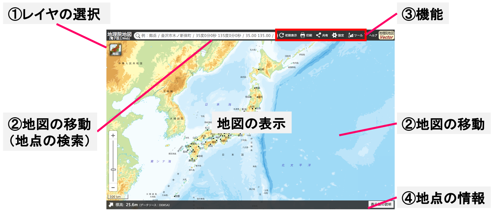
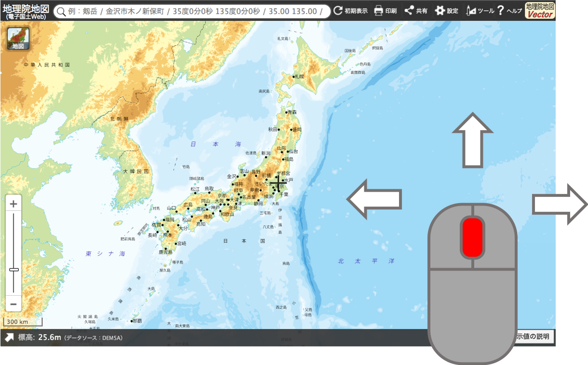
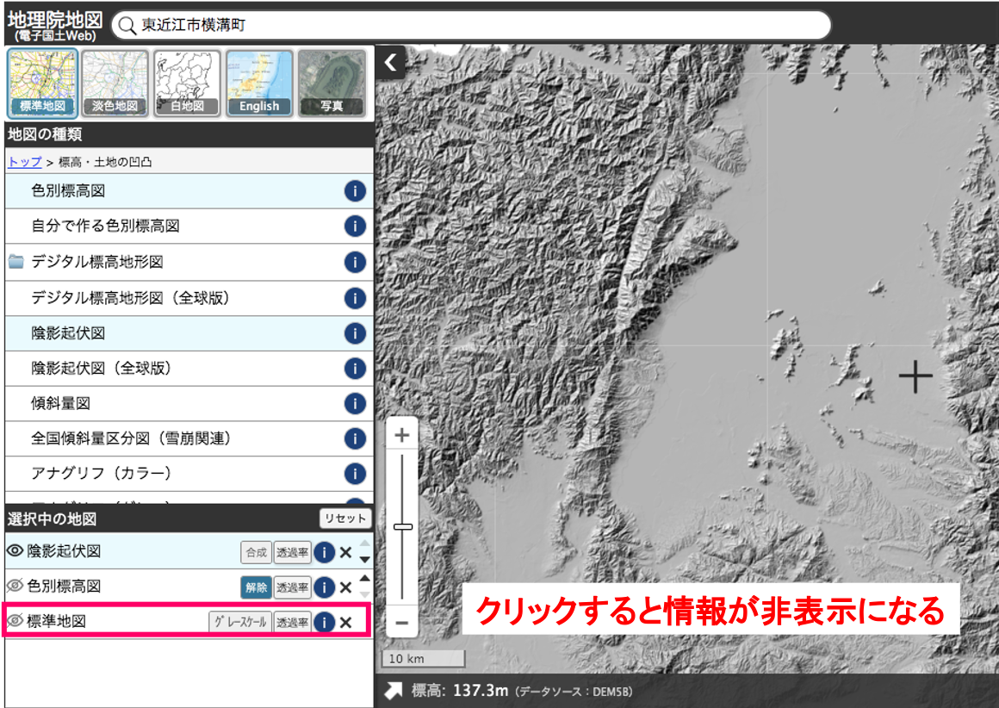
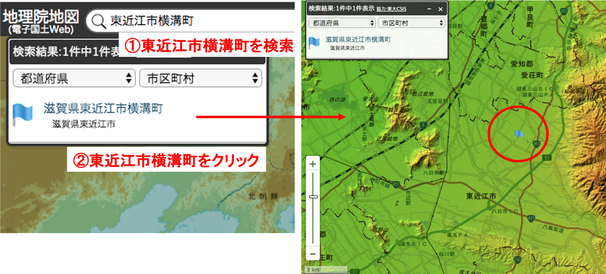
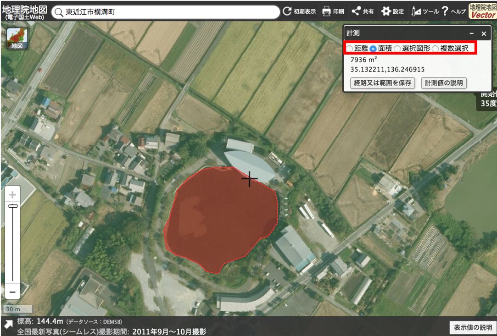
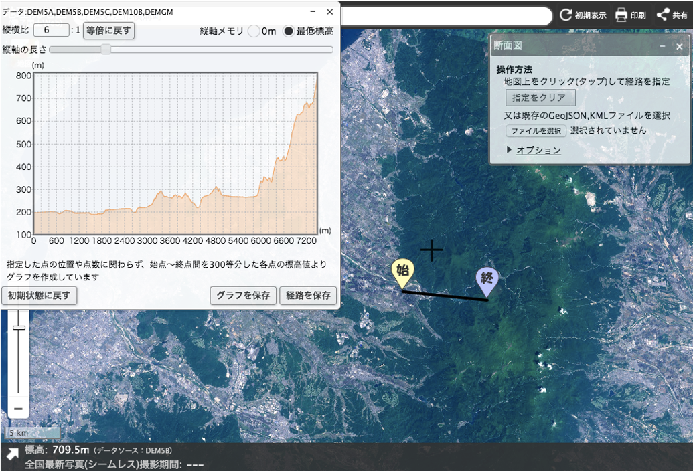
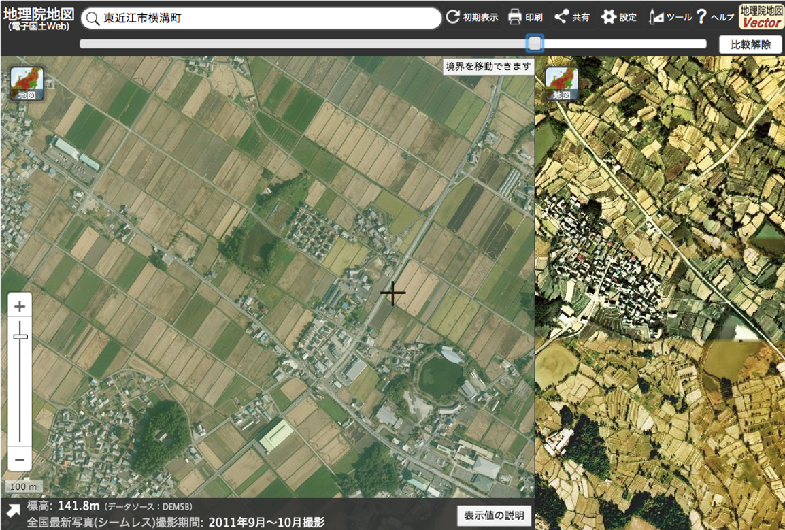
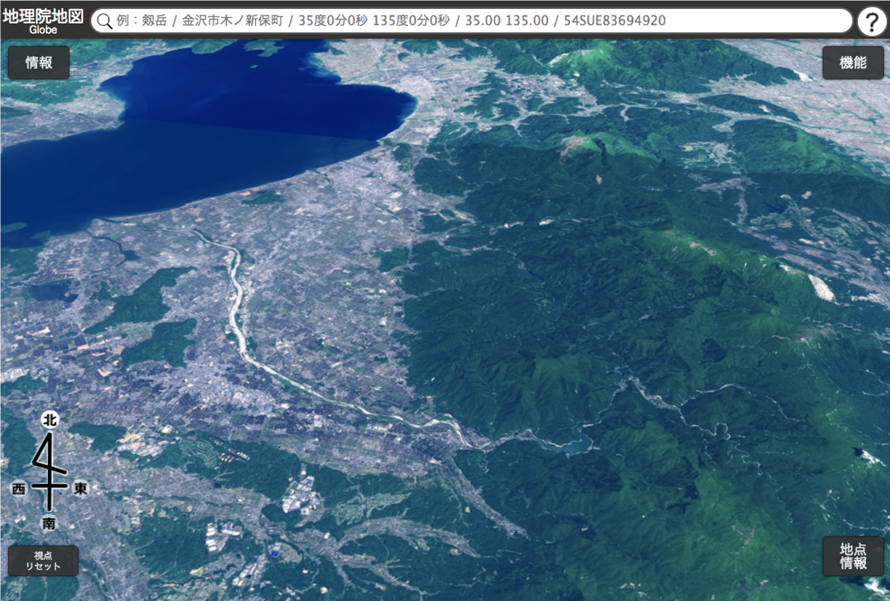
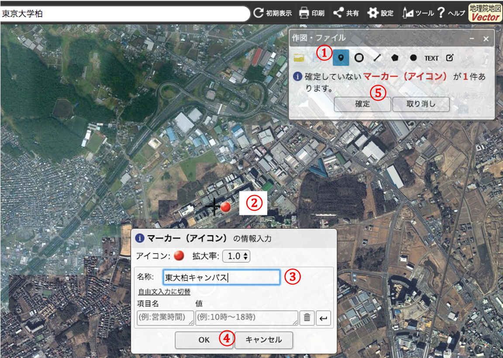
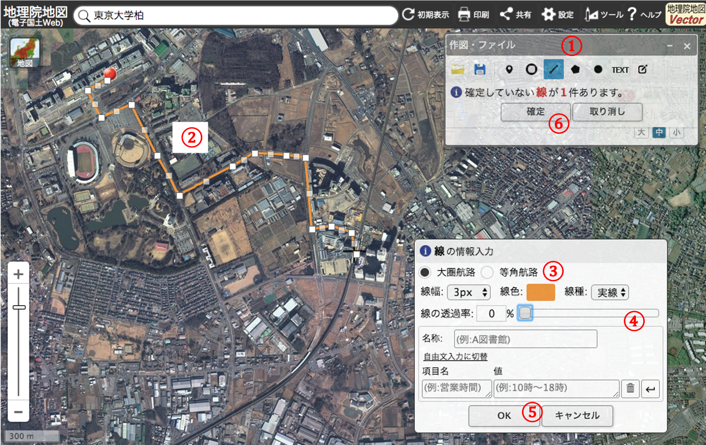

地理院地図入門
本教材は、地理院地図の基本機能を解説しています。地理院地図の活用のパートでは、実際に地理院地図を活用して地域学習をする手法を解説しています。その他に、地理院地図の機能の解説や作図ツールを用いたデータ作成を行います。本教材を使用する際は、利用規約をご確認いただき、これらの条件に同意された場合にのみご利用下さい。
Menu
地理院地図とは
- 国土地理院の地図、空中写真を無償で閲覧できるサービス
- 基準点や土地条件図などの情報が公開されている
- 災害に関する情報の更新が早い
- 様々な地図、空中写真をタイルで配信している（他のWeb地図でも利用できる）
- GitHubでソースコードが公開されている
- スマートフォンでも表示、操作が可能
地理院地図の基本機能
以下では、地理院地図の基本機能について、解説します。インターネットから、地理院地図にアクセスしてください。

地理院地図は、主に以下の①～④の機能で構成されている。 
- レイヤ*（地理情報）の選択（空中写真や基準点等の表示）
- 地図の移動（住所検索、マウス操作による移動）
- 機能（地物の計測、2画面表示、データ作成等）
- カーソル位置の標高や緯度経度等の表示
※GISに読み込んだ地理情報は、レイヤと呼ばれることが一般的です。
地図
地理院地図では、以下のような情報が閲覧できる。
- ベースマップ
- 空中写真・衛星画像
- 起伏を示した地図
- 土地の特徴を示した地図
- 地図の更新状況や提供地域等
- 基準点・測地観測
- 地震、台風・豪雨等、火山
- 指定緊急避難場所
- 自然災害伝承碑
- 南極の地理空間情報
- 地理教育の道具箱
- 他機関の情報
機能
地理院地図では、以下のような機能が利用できます。
- 初期表示
- 印刷
- 共有
- 設定：広域図、中心線の表示切り替え等
- ツール:作図、計測、印刷、2画面表示、地図比較、断面図、3D、Globe、外部タイルの読み込み
地理院地図の活用
以下では、GIS初学者向けに、東近江市（旧湖東町）の地形と土地利用の変遷の学習を例にあげ、地理院地図の活用について解説します。上記の「地理院地図とは」、「地理院地図の基本機能」を学習した後、本実習をはじめてください。この実習は、PCのみでなくスマートフォンでも行うことができます。※この実習は「社会科現地研修 西堀榮三郎記念探検の殿堂で博物館の機能を学ぼう」で実施した内容を改良したものです。
本実習の目的
現在の東近江市の地域課題を学習するための、導入として実践する。この講習では、空中写真や地図を利用し、東近江市（旧湖東町）の地理的特徴や土地利用の変遷を学習する。使用する情報は、東近江市の位置、地形図、標高情報、現在の空中写真、過去の空中写真とする。
地図を移動し、表示画面を切り替える
まず、地図の操作方法を学ぶため、ズームインやズームアウト、マウス操作で滋賀県東近江市の位置まで移動する（後ほど、住所検索の手法を解説）。3分ほど操作して、見つけることができなかった場合は、以下の東近江市の位置を表示するをクリックする。 
スマートフォンの場合は、以下のように操作する。
標高情報を表示する
次に、東近江市周辺の地形を把握するため、地図＞標高・土地の凹凸＞色別標高図をクリックする。表示した情報は、クリックで切り替えることができ、✕マークで消すことができる。最後にサイドバーを閉じる。

同様に、地図＞標高・土地の凹凸＞陰影起伏図等の別の情報も表示できる。ここで提供されている情報には、それぞれ拡大縮小できるレベルや、地図の範囲が設定されている点に注意する。地図は選択中の情報のリストのレイヤ名をクリックすると、地図の表示・非表示が変更できる。

特定の地域を検索する
この実習では、旧湖東町周辺に範囲を絞るため、地理院地図の住所検索機能から、以下のように東近江市横溝町と入力する。次に検索結果から、東近江市横溝町をクリックし、表示場所を移動する。最後にウィンドウを閉じる。

空中写真を表示する
土地利用の変化を比較するため、地図＞年代別の写真から、全国最新写真（シームレス）を読み込む。次に、1974年～1978年を読み込む。地図は選択中の情報のリストから、レイヤの表示順序を移動できることを確認する。ここでは、最新の写真を一番上に設置し、次に1974年～1978年を配置する。

２つの空中写真を交互に切り替え、土地利用の変化を見ると、住宅地、ため池、圃場の区画整備等が変化していることが把握できる。余裕があれば、ため池の増減や圃場の区画の違いについて考える。※実習では、「ほ場整備事業」、「永源寺ダム」等についても解説した。
その他の有用な機能
地理院地図では、ツールから以下のような機能を呼び出すことができます。ここでは、いくつかの機能の利用法について解説します。

計測
ツール＞計測から、距離や面積が計算できる。

断面図
ツール＞断面図から、標高に応じた断面図が作成できる。

並べて比較
ツール＞並べて比較から、二画面で異なる地図を表示できる。

重ねて比較
ツール＞重ねて比較から、重ねる範囲を調節して地図を表示できる。

3D
ツール＞3Dから、指定した範囲の3D地図を表示できる。

Globe
ツール＞Globeから、全球スケールの3D地図を表示できる。

作図・ファイル
作図・ファイルを用いるとデータを作成することができます。ここでは、「東京大学柏キャンパスへのアクセスマップの作成」を例にあげ、データの作成方法を解説する。まず、検索機能を用いて、東京大学柏キャンパスの位置に移動します。次にツール＞作図・ファイルを開きます。
ポイントの作成
柏キャンパスの位置を入力するため、1.マーカー（アイコン）の追加ボタンをクリックし、2.ポイントを置きたい地点をクリックする。3.ポイントの名称（「東大柏キャンパス」）を入力し、4.OKをクリック、5.確定をクリックする。

ラインの作成
1.線の追加ボタンをクリックし、2.アクセス経路を作成する（柏の葉キャンパス駅から、事前に作成したポイントの位置まで）。線の作成は、最後の点でダブルクリックして完了させる。3.線の色や4.透過度を変更する。5.OKをクリックし、6.確定をクリックする。

ポリゴンの作成
面（多面形）を追加ボタンをクリックし、ラインと同様に作成する（ここでは、実習場所とする）。面の作成は、最後の点でダブルクリックして完了させる。

データを保存する
保存ボタンをクリックし、データ形式を選択しデータをダウンロードする(ここでは、GeoJSON形式で保存する)。作成したデータは、ドラッグアンドドロップで地理院地図で表示できる。その他に、QGISビギナーズマニュアルのベクトルデータの読み込みを参考にすると、ダウンロードしたGeoJSONをQGISで表示できる。

印刷
印刷をクリック、1.用紙サイズを選択、2.方位記号を追加、3.印刷をクリックすると地図が出力できる。
ライセンスに関する注意事項
本教材で利用しているキャプチャ画像の出典やクレジットについては、その他のライセンスについてよりご確認ください。